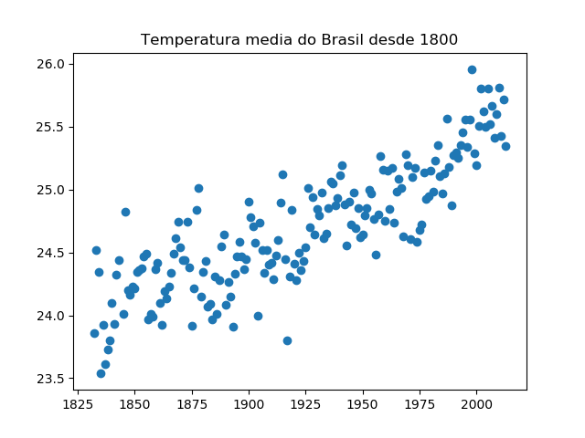
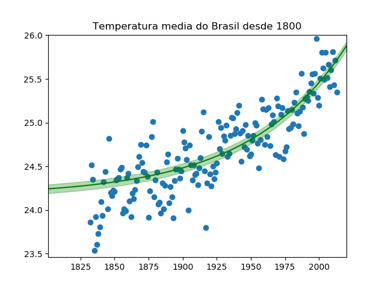

Análise de dados com Python
Data! Data! Data! I can't make bricks without clay!
— Sir Arthur Conan Doyle
Analisar os dados é um passo essencial para que podemos entender o que está acontecendo e também para decidirmos o que iremos fazer. Eles são abstratos na maioria das vezes, e a sua interpretação requer tempo, mas quando conseguimos retirar a essência, pegar o que os dados estão nos “dizendo”, então aí nós conseguimos ver que os dados são muito mais do que apenas dados. Porém, como eu faço pra ver além do que está escrito na minha tela?
Hoje eu irei apontar alguns tópicos importantes ao meu ver sobre a parte de visualização e análise, que eu fui adquirindo com o tempo, e também mostrarei algumas partes de como se analisar o básico dos dados utilizando Python com bibliotecas científicas e de representações gráficas.
Nós teremos como dados para esse artigo, a temperatura média do solo dos países desde 1750, que eu peguei diretamente do Berkeley Earth.
Bom, por onde começar? Antes que você me diga: “abrir um editor de texto, começar a importar as bibliotecas do Python e os dados em csv…”, Ainda não! Primeiro vamos contextualizar: bom, os nossos dados são sobre temperaturas, então o que sabemos sobre temperatura?
- É medida em graus Celsius pelo Sistema Internacional;
- Varia durante o dia;
- Há diferenças grandes durante as estações (principalmente inverno e verão);
- A cada dia que passa são criadas tecnologias mais precisas para prever o clima;
Então, antes de irmos para os dados, já temos ideia de que a temperatura provavelmente estará em Celsius, e é interessante separar os dados por estações para podermos analisá-los um por um, e aí ter mais consistência, além de poder ver a variação de temperatura por estações. A variação durante o dia não é realmente importante para nós, já que temos a média, mas podemos considerar analisá-la caso os dados possuam horário.
Aqui está as bibliotecas que iremos utilizar:
#imports
import pandas as pd # Pandas é uma biblioteca para analise de dados
import matplotlib.pyplot as plt # Matplotlib para representação gráfica;
import numpy as np # Numpy e Scipy para computação científica (utilizaremos para fazer a curva de pontos)
from scipy.optimize import curve_fit
from plot_erro import plor_erro
Vamos visualizar a temperatura geral do solo brasileiro.
data = pd.read_csv('./src/GlobalLandTemperaturesByCountry.csv')
print(data.info())
Teremos como resultado:
PS C:/dev/temperatura-terra>python 01.py
<class 'pandas.core.frame.DataFrame'> Int64Index: 2164 entries, 77110 to 79289
Data columns (total 4 columns):
dt 2164 non-null object
AverageTemperature 2164 non-null float64
AverageTemperatureUncertainty 2164 non-null float64
Country 2164 non-null object
dtypes: float64(2), object(2)
memory usage: 17.6+ MB
None
Agora sabemos que os nossos dados possuem quatro colunas:
- dt;
- AverageTemperature;
- AverageTemperatureUncertainty;
- Country;
Onde dt é a data de quando foi feita a medição, AverageTemperature é a média de temperatura em si, AverageTemperatureUncertainty é a incerteza da medida, o qual será importante para temos uma noção de precisão, e Country onde é o país de onde foi medido.
Vamos agora filtrar para apenas dados do Brasil e então pegar 10 amostras:
data = pd.read_csv('./src/GlobalLandTemperaturesByCountry.csv')
brasil = data.where(data.Country == 'Brazil')
print(brasil.sample(10))
Saída:
PS C:/dev/temperatura-terra> python01.py
dt AverageTemperature AverageTemperatureUncertainty Country
224087 NaN NaN NaN NaN
250103 NaN NaN NaN NaN
205439 NaN NaN NaN NaN
70035 NaN NaN NaN NaN
193227 NaN NaN NaN NaN
518167 NaN NaN NaN NaN
501803 NaN NaN NaN NaN
537256 NaN NaN NaN NaN
556422 NaN NaN NaN NaN
479835 NaN NaN NaN NaN
Opa! O que aconteceu aí? Como assim NaN?! Tá bugado isso aí meu!
Infelizmente, quando nós estamos a analisar os dados, eles não são sempre completos, muitas vezes eles virão com brancos e lacunas que comprometem a nossa análise, e isso acaba nos levando a tirar conclusões erradas. Um processo importante para conseguirmos ter mais confiança, é fazer a limpeza dos dados.
Como se trata de temperaturas, na minha opinião a melhor saída (e mais fácil) é simplesmente deletar esses registros vazios, porque não faz sentido nós tentarmos preencher os “buracos” dos dados com base neles mesmos, visto que ao tentar isso possivelmente acabaríamos tendo uma conclusão menos precisa do que teríamos se simplesmente ignorássemos esses dados vazios.
Então iremos dropar os registros vazios, com o comando brasil.dropna() e vamos continuar.
brasil.dt = [d.split('-')[0] for d in brasil.dt] # formata a data de yyyy-mm-dd para yyyy
brasil_groupby_ano = brasil.groupby('dt')
# preparar exibicao
# converte o ano de string para int
x = [int(dt[0]) for dt in brasil_groupby_ano.dt]
# calcula a media das temperaturas em cada ano
y = brasil_groupby_ano.AverageTemperature.mean()
plt.scatter(x, y)
plt.title('Temperatura media do Brasil desde 1800')
plt.show()
E olha só o que conseguimos 😱:
Olhando para este gráfico qualquer pessoa consegue notar que a temperatura está aumentando. Seria você, aquecimento global?
Não estou satisfeito. Vamos continuar. Que tal colocarmos uma linha que faz o trajeto desses pontos para confirmarmos que está aumentando a temperatura?
...
# preparar exibicao
# converte o ano de string para int
x = [int(dt[0]) for dt in brasil_groupby_ano.dt]
# calcula media das temperaturas em cada ano
y = brasil_groupby_ano.AverageTemperature.mean()
# media do erro no ano
sigma = brasil_groupby_ano.AverageTemperatureUncertainty.mean()
plt.scatter(x, y) # adiciona os pontos no grafico
plt.title('Temperatura media do Brasil desde 1800')
# efetua a exponenciacao do numero pelo
# logaritmo natural + parametros de otimizacao
def exponenciar(x, a, b, c):
return a * np.exp(-b * x) + c
# ajuste de curvas dada a nossa funcao e os eixos
popt, _ = curve_fit(exponenciar, x, y, p0=(1, 1e-6, 1), maxfev=4000, sigma=sigma)
xx = np.linspace(1800, 2020) # cria numeros iguais distribuidos de 1800 ate 2020
yy = exponenciar(xx, *popt) # yy = f(xx), adequados aos params de otimizacao
# essa funcao exibe uma linha com um sombreado em volta, representando a margem de erro
plot_erro(xx, yy, .05)
plt.show()
Agora, baseando-se nos valores que conseguimos anteriormente, o código acima irá traçar uma linha que se ajusta aos valores. Infelizmente ficou complexo, e para nós não é importante saber o que cada linha do código faz, então irei ser mais conciso nessa parte. Caso você queira se aprofundar, deixarei o link para o source desse artigo com todos os códigos e uma explicação melhor em cima deles.
Olha só 😎! Agora temos uma linha que representa o crescimento de temperatura ao longo dos anos. O verde mais claro seria a margem de erro, de 5% para mais ou para menos, como é dito no source de onde peguei os dados.
A partir de agora, nós podemos dizer que a temperatura do solo brasileiro, em média, aumentou 1,3° Celsius em 200 anos com a nossa simples análise. Porém, aqui é só o começo. Eu mostrei apenas uma pontinha do que podemos fazer e a ideia do que precisamos para visualizar os dados de alguma coisa. Resumindo, o básico é:
- Contextualizar, entender que tipo de dados estamos falando e pra que eles servem;
- Brainstorming, jogar várias ideias a cerca do contexto dos dados para termos ideias do que seria interessante analisar;
- Observar os dados que temos inicialmente;
- Limpar os dados;
- Aplicar as ideias em cima dos dados e transformar isso em algo (de preferência graficamente) representável;
- Chegar a conclusões;
No início do artigo eu falei sobre separar as temperaturas por estações e etc, e isso é muito interessante e vale a pena fazer, porém como não quero me estender muito, deixo isso para uma próxima conversa. Mas deixo o convite pra você: que tal tentar levar isso como um kickstart? Boa sorte!